Practice Log n Share
2026년 9월
개요
연습할 때는 한 번 탭해 기록하고, 레슨에서는 그 화면을 그대로 선생님께 보여 준다. 색소폰을 배우는 나 자신을 위해 iPhone 앱을 기획·디자인하고 AI와 협업해 구현했다.


- 역할
- 기획, UX/UI 디자인, 구현(Claude Code·Codex와 협업)
- 기간
- 2026년 9월
- 기술
- React · TypeScript; Swift (WKWebView, Live Activity, StoreKit, iCloud)
웹 데모 사용해 보기 (2026년 9월 20일 기준 나의 실제 연습 기록 수록)
계기 — “연습은 어때요?”라는 질문에, 답할 수 없었다
격주 레슨에서 “스케일을 많이 했어요”라고 답해도 무엇을 얼마나 연습했는지는 전해지지 않는다. 악기를 목에 건 채 종이 일지를 쓰기는 어려웠고, 사용해 본 시간 기록 앱은 혼자 돌아보기 위한 도구였다.

기록 — 악기를 든 채, 한 번의 탭으로
연습 중에는 카테고리 카드만 만진다. 탭하면 측정이 시작되고, 다른 카드를 누르면 전환되며, 같은 카드를 다시 누르면 멈춘다.
- 1 누적 기록
- 지금까지의 연습. 앱을 열면 가장 먼저 보인다.
- 2 오늘
- 연습 순서와 시간 배분. 한 시간이면 가득 찬다.
- 3 측정 중
- 이 카드만 밝게 하고 흰 테두리로 표시한다.
- 4 카드
- 탭으로 전환. 오늘의 시간은 크게 표시한다.
하루 — 한 번 채운 막대는, 채워진 채로
오늘의 막대는 한 시간이면 가득 찬다. 한 시간을 넘기면 그 시점의 합계를 오른쪽 끝으로 삼아, 이미 채운 막대에 빈 공간이 다시 생기지 않도록 했다.
오늘의 연습 — 1시간 05분
채택
미채택
쌓임 — 시작한 날부터, 모두 보이도록
연습한 날은 녹색의 진하기로, 레슨일은 빨간 테두리로 표시하며, 가로로 이동해 기록을 시작한 날까지 돌아갈 수 있다. 가벼운 렌더링보다 여러 해의 연습을 모두 살펴볼 수 있는 것을 우선했다.

공유 — 레슨을 시작하며, 한눈에 전해지는 한 화면
지난 레슨일부터 오늘까지를 카테고리별 합계와 일별 내역으로 정리해 그대로 선생님께 보여 준다. 일별 표는 글자를 줄이더라도 모든 카테고리를 한 화면에 넣어 가로 스크롤을 없앴다.

변화 — 카드를, 연습의 조작판으로
AI와 대화하며 정리한 명세서로 화면을 만들고, 직접 써 보며 고치기를 반복했다. 초기 웹 버전에서 기록과 공유의 형태를 탐색한 뒤 iPhone에서 쓸 앱으로 구현했다.

9월 9일
초기 버전

9월 21일
웹 버전
9월 24일
iOS 1.0
- 이름과 시간을 함께
- 카드에 오늘의 시간을 크게 표시해 무엇을 얼마나 연습했는지 연결했다.
- 현재 상태를 한눈에
- 측정 중인 카드만 밝게 하고 나머지는 어둡게 했다.
- 조작 범위를 화면 안에
- 카드 한 줄이 화면 안에 들어오는 위치에서 스크롤이 멈추도록 했다.
마지막 단계에서는 Claude Code가 잠재적 문제를 제시하고, Codex가 검증·수정하며, 내가 채택 여부를 결정하는 과정을 약 15회 반복했다.
손맛 — 멈추는 방식은, 직접 써 보고 고른다
“부드럽게 움직이다 딱 멈추는” 느낌은 말로 요청하는 것만으로는 만들 수 없었다. 방식과 값을 즉시 바꾸는 조정 도구를 AI와 만들고, 실제 기기에서 다섯 방식을 비교해 브라우저 기본 스냅을 골랐다.
험프형

착지점 예측형

브라우저 기본 proximity
채택

브라우저 기본 mandatory

스냅 없음


제품으로서 — 연습 너머까지
외관은 기기 설정에 맞춰 바뀐다. 연습 기록은 기기 안에 저장하고 iCloud에 자동으로 백업한다.

사용해 보니 — 다음 질문은, 얼마나 자세히 남길 것인가
매일 아침 연습에 쓰고 레슨에서 선생님께 화면을 보여 드렸다. 연습 내용이 한눈에 보인다는 반응과, 스케일 종류까지 기록하면 더 유용하겠다는 의견을 받았다(요지). 간편함을 유지하면서 자세히 남길 수 있도록 카테고리 아래에 한 단계를 더 두는 것을 검토하고 있다.
자료
웹 데모에서 기록과 공유를 직접 사용해 볼 수 있다. 2026년 9월 20일 기준 나의 실제 연습 기록이 수록되어 있으며, 조작 결과는 현재 사용하는 브라우저에만 저장된다.